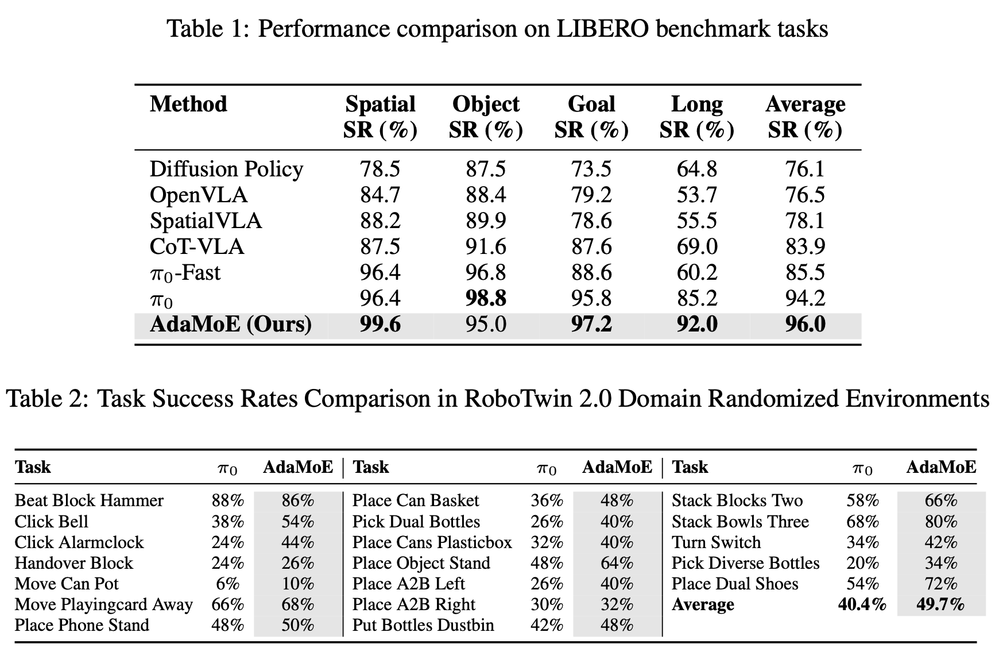

Expertise Need Not Monopolize:
Action-Specialized Mixture of Experts for Vision-Language-Action Learning
The AdaMoE-VLA Model

Our AdaMoE-VLA framework builds upon a pretrained flow-matching Vision-Language-Action (VLA) model π0, enhancing its action reasoning capacity through Mixture-of-Experts (MoE) integration. Our pipeline (Fig. a) processes multi-modal inputs through a vision-language model and a transformer-based action expert to predict continuous control. Each transformer block in the action expert incorporates an MoE layer (Fig. b) comprising shared experts, which inherit the original FFN weights to capture general manipulation patterns, and routed experts, dynamically selected by a router network to specialize in action-specific behaviors.
As shown in Fig. c, the vanilla MoE couples expert selection and weighting through a single router using top-k softmax gating. In contrast, our AdaMoE-VLA (Fig. d) introduces a decoupled architecture with an independent router for expert selection and a scale adapter for adaptive weighting. This design alleviates optimization conflicts between load balancing and task specialization, enabling more flexible and expressive expert collaboration for robust robotic control.
Experiments
Evaluations on simulation benchmarks
We select two simulation benchmarks to evaluate our method: (1) Four task suites from LIBERO dataset: LIBERO-Spatial, LIBERO-Object, LIBERO Goal and LIBERO-Long. (2) 19 tasks from RoboTwin 2.0. Each task dataset contains 100 expert trajectories from Clean environments and 400 expert trajectories from Domain Randomized environments.
Meaningful Expert Specialization
Effectiveness of Our Decoupled Architecture Design
Real-World Experiments
To validate the practical effectiveness of our AdaMoE-VLA approach, we conduct real-world robotic manipulation experiments using a dual-arm manipulation platform. Our experimental setup utilizes the ALOHA-Agilex system developed by AgileX Robotics, equipped with two Piper robotic arms that enable bimanual manipulation capabilities.
We design four representative manipulation tasks that cover diverse manipulation skills and evaluate our method's performance in real-world scenarios:
1) Place Cup: Precise positioning
3) Click Bell: Coordinated activation
2) Stack Plate: Stable stacking
4) Adjust Bottle: Fine orientation
Table 5 presents the success rates of our AdaMoE-VLA compared to the π0 baseline across all four real-world manipulation tasks. Our method demonstrates consistent improvements across all tasks, with particularly notable gains in complex manipulation scenarios requiring precise coordination.
Below are videos of our AdaMoE-VLA model demonstrating various robust behaviors across the four representative manipulation tasks. (Videos are sped up by 2×.)
Place Cup
Stack Plate
Click Bell
Adjust Bottle
BibTeX
@misc{shen2025expertiseneedmonopolizeactionspecialized,
title={Expertise need not monopolize: Action-Specialized Mixture of Experts for Vision-Language-Action Learning},
author={Weijie Shen and Yitian Liu and Yuhao Wu and Zhixuan Liang and Sijia Gu and Dehui Wang and Tian Nian and Lei Xu and Yusen Qin and Jiangmiao Pang and Xinping Guan and Xiaokang Yang and Yao Mu},
year={2025},
eprint={2510.14300},
archivePrefix={arXiv},
primaryClass={cs.RO},
url={https://arxiv.org/abs/2510.14300},
}